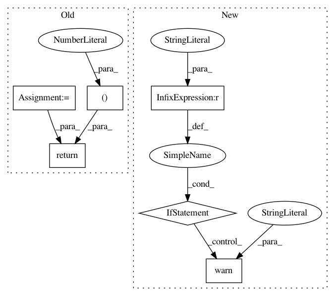

44edfba78536668c2240e8e722029741a547bd9a,chainercv/transforms/image/rotate.py,,rotate,#Any#Any#Any#Any#Any#,21
Before Change
// http://scikit-image.org/docs/dev/api/skimage.transform.html//warp
if interpolation == PIL.Image.NEAREST:
interpolation_order = 0
elif interpolation == PIL.Image.BILINEAR:
interpolation_order = 1
elif interpolation == PIL.Image.BICUBIC:
interpolation_order = 3
return scipy.ndimage.rotate(
img, angle, axes=(2, 1), reshape=expand,
order=interpolation_order, cval=fill)
After Change
returns an array :obj:`out_img` that is the result of rotation.
if chainer.config.cv_rotate_backend == "cv2":
if _cv2_available:
return _rotate_cv2(img, angle, expand, fill, interpolation)
else:
warnings.warn(
"Although `chainer.config.cv_rotate_backend == "cv2"`, "
"cv2 is not found. As a fallback option, rotate uses "
"PIL. Either install cv2 or set "
"`chainer.global_config.cv_rotate_backend = "PIL"` to "
"suppress this warning.")
return _rotate_pil(img, angle, expand, fill, interpolation)
elif chainer.config.cv_rotate_backend == "PIL":
return _rotate_pil(img, angle, expand, fill, interpolation)
else:
raise ValueError("chainer.config.cv_rotate_backend should be "
"either "cv2" or "PIL".")
In pattern: SUPERPATTERN
Frequency: 3
Non-data size: 6
Instances
Project Name: chainer/chainercv
Commit Name: 44edfba78536668c2240e8e722029741a547bd9a
Time: 2018-11-20
Author: yuyuniitani@gmail.com
File Name: chainercv/transforms/image/rotate.py
Class Name:
Method Name: rotate
Project Name: sebp/scikit-survival
Commit Name: 07237eafea86309036a6043b0041f606573bdaf7
Time: 2020-06-27
Author: sebp@k-d-w.org
File Name: sksurv/tree/tree.py
Class Name: SurvivalTree
Method Name: predict_cumulative_hazard_function
Project Name: sebp/scikit-survival
Commit Name: 07237eafea86309036a6043b0041f606573bdaf7
Time: 2020-06-27
Author: sebp@k-d-w.org
File Name: sksurv/tree/tree.py
Class Name: SurvivalTree
Method Name: predict_survival_function